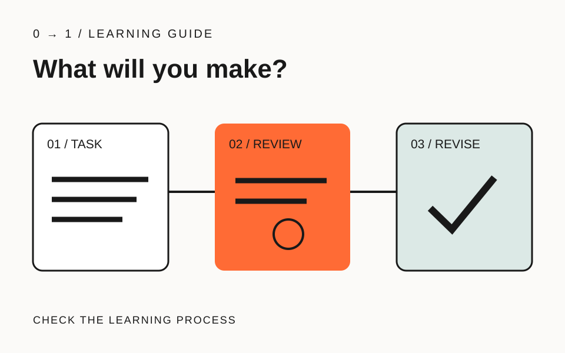

スクールの紹介に技術名が並んでいても、自分の作りたいサイトへどうつながるのかは見えにくいものです。Web制作スクールの選び方では、授業の数を数える前に「何を提出し、どこを直すのか」を確かめてみましょう。
この記事は0→1編集部による確認方法の提案です。自校の公開資料を例にしますが、他校より優れているという順位付けではありません。候補校にも同じ質問を当て、資料で確認できた内容だけを比較します。
作りたいものを、提出物の言葉にする
「Webを学びたい」から一歩進めて、「自分の作品を紹介する三ページを作り、公開後に文章を更新したい」と書きます。これは受講を検討する人の架空の目標です。就職や収入の達成条件とは分けて扱います。
この目標なら、見た目の制作だけでなく、ページの実装、公開、更新の練習があるかを調べます。「デザインを学べる」という説明だけで全工程が含まれるとは判断せず、作品として何を作る授業なのかを確認してください。
目標が曖昧なときは、最初のホームページで決めることを使い、読む人と次の行動を一文にします。まだ必要でない技術は、今回の必須条件から外して構いません。
課題と合格基準を、一組で読む
カリキュラムでは「HTML」「CSS」という科目名と一緒に、提出物と合格基準を探します。合格基準とは、課題のどこを見て達成を判断するかという条件です。視聴を終えることと、制作物を確認してもらうことは、比較欄を分けましょう。
例えば0→1のカリキュラムでは、提出物を講師が基準に沿ってレビューし、満たしていない項目を直して再提出する流れを説明しています。これは提供する進め方の説明で、全員の到達を保証する実績ではありません。
候補校ごとに「提出するもの」「確認される観点」「直した後の再確認」の三欄を作ります。記載が見つからなければ「なし」と推測せず「要確認」と残し、説明を求める箇所にします。
添削例は、指摘の後までたどる
添削とは、提出した作品に改善点を返すことです。「ここが違います」で終わるのか、理由を読み、自分で直した案をもう一度見てもらえるのかを確かめます。完成画面がきれいかだけでは、この過程は分かりません。
公開中のHTMLレッスンには、課題、初稿、指摘、修正版、合格基準があります。このページはサンプルであり、受講生の成果として載せられたものではありません。見るときは、一つの指摘が修正版のどの変更につながるかを追ってください。
自分がその説明を読んで「次にどこを直すか」を言えるかも確認します。理解できなければ向いていないと即断せず、前提となる知識や、分からないときの質問方法を聞いてみましょう。
質問できる条件を、生活時間に合わせて確かめる
質問の回数だけでなく、対象となる課題、使う連絡手段、返答の目安、面談の予約方法を確認します。「いつでも送れる」と「いつでもすぐ返る」は別の条件です。仕事の後に学ぶなら、その時間に利用できる範囲を具体的に聞きます。
比較メモには公式ページのURLと確認日も添えます。面談で回答を得た場合は、質問と回答を対にして残してください。自分が期待した内容と、実際に説明された条件を混ぜないためです。
15分を目安に、候補校へ聞く一問を作る
候補を二つ選び、同じ制作目標で三欄のメモを埋めます。根拠のある欄と要確認の欄を分け、最も重要な空欄を質問に変えましょう。例えば「自主制作した紹介サイトも添削対象ですか。再提出した後にも確認がありますか」と聞けます。
課題の読み方を試すなら、無料のHTMLレッスンを一つ使ってください。比較を終える条件は、点数で勝者を決めることではなく、自分に必要な支援が確認できていることです。
記載内容へのご質問や訂正のご連絡は、hello@junkbranding.comまでお願いします。